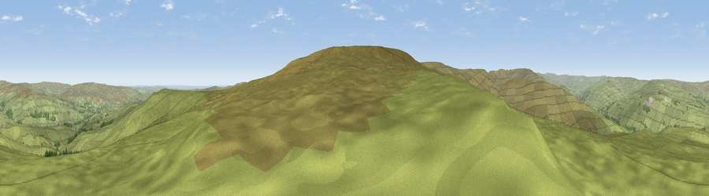

Viewpoint near Westgate
#12564 in England · top 34% of its area beats it · near WestgateThe view, rendered

A 360° render of this exact spot computed from the terrain model, tree cover and land cover — summer colours, afternoon light, calibrated against photographs of famous viewpoints. Real trees, hedges and buildings will differ in detail.
The panorama
Grey silhouette: terrain skyline in each direction (720 bearings, Earth curvature and refraction included). Dashed green: skyline with trees (+15 m) and buildings (+8 m) as obstacles. Blue strip: how far the ground is visible on each bearing.
Where the view opens
Wedge length = distance to the farthest visible ground on that bearing (vegetation-aware). Rings at 10, 25 and 50 km.
What fills the view
97% grassland · 2% woodland
Angular shares of the visible panorama (visual magnitude), not map area. Landscape diversity 0.06 (0–1 Shannon).
Key numbers
More beautiful places nearby
The staircase of upgrades: each row has a higher view potential than everything closer. Driving times are estimates from straight-line distance, calibrated against real road routing — check an actual route before setting out.
| Place | Direction | Drive | Score |
|---|---|---|---|
| Viewpoint near Stanhope | E · 2 km | ~4 min | 61.4 |
| Viewpoint near Stanhope | E · 2 km | ~5 min | 62.8 |
| Viewpoint near Westgate | SSW · 2 km | ~6 min | 66.4 |
| Raven Seat | SE · 4 km | ~9 min | 68.5 |
| Viewpoint near Newbiggin | SSW · 4 km | ~10 min | 69.4 |
| Viewpoint c10644_7960 | SE · 5 km | ~10 min | 69.6 |
| Viewpoint near Frosterley | ESE · 6 km | ~13 min | 70.6 |
| Collier Law | NE · 10 km | ~19 min | 71.7 |
54.71245, -2.08572 · source: screening · position refined by local search. Computed location — check access rights before visiting.